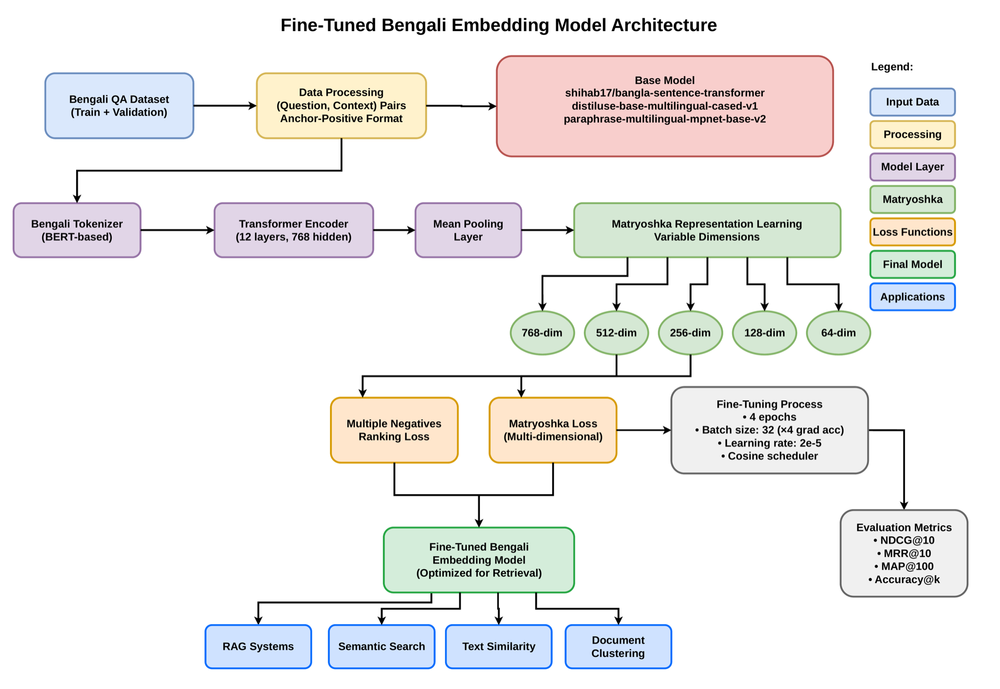
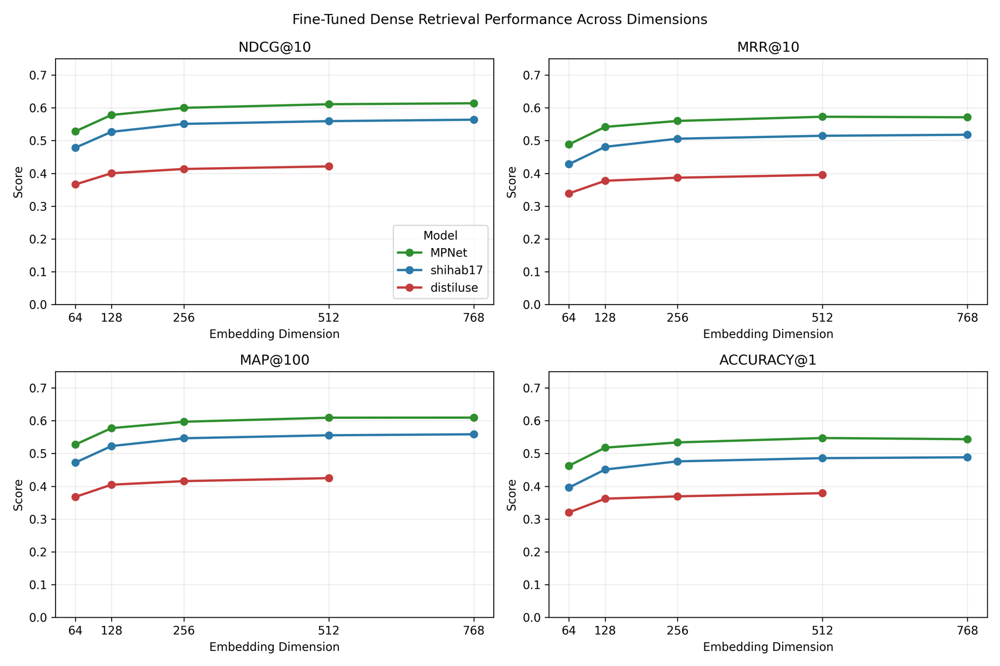
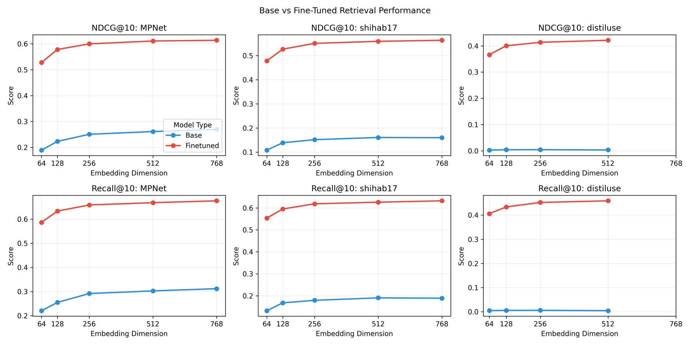
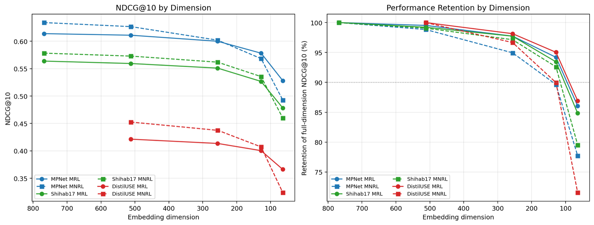
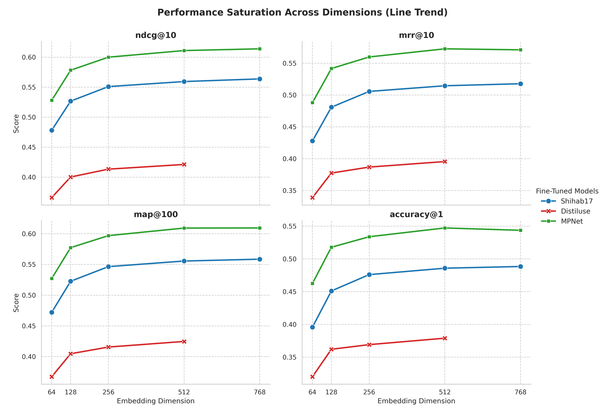
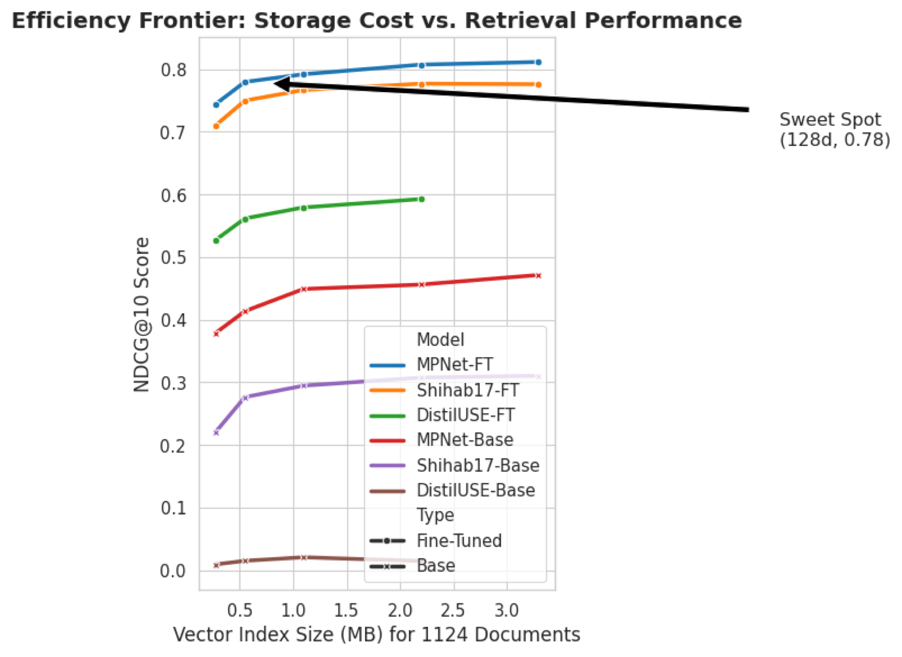
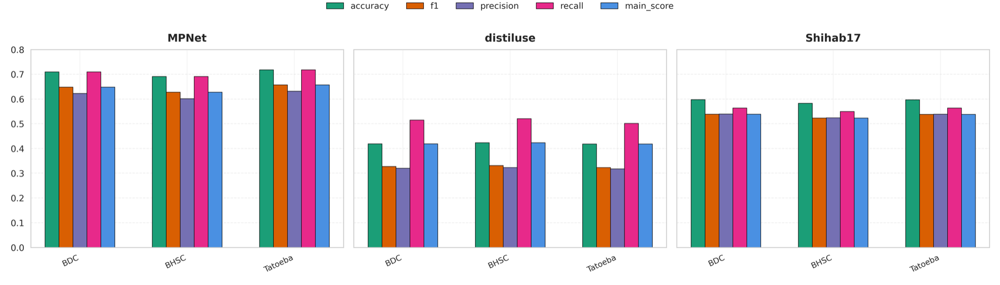
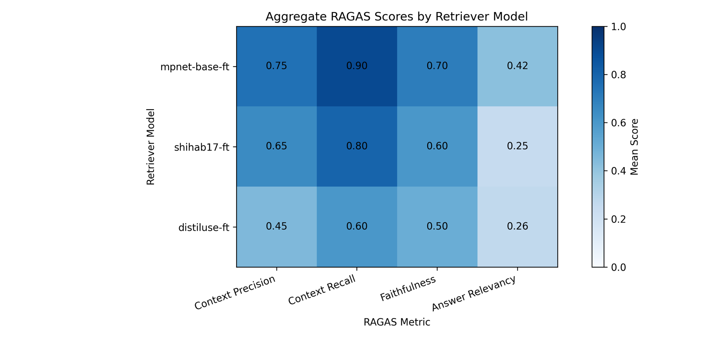

Department of Computer Science and Engineering,
Rajshahi University of Engineering and Technology (RUET), Bangladesh
Effective semantic retrieval remains the primary bottleneck for Bengali Retrieval-Augmented Generation (RAG) systems. While general-purpose multilingual models exist, they often lack the specific semantic alignment required for high-precision tasks. This paper conducts a comparative study of three embedding architectures—monolingual (shihab17), distilled multilingual (distiluse), and paraphrase-focused (mpnet)—to identify the optimal foundation for Bengali retrieval. We fine-tune these models on BanglaRQA using Multiple Negatives Ranking Loss wrapped with Matryoshka Representation Learning (MRL).
On the primary BanglaRQA test regime of 1,124 answerable queries, the fine-tuned mpnet model achieves the strongest dense-retrieval result, with NDCG@10 of 0.6139, statistically outperforming the monolingual baseline (p < 0.001). A lexical BM25 baseline is also strong on this factoid Wikipedia setting, reaching NDCG@10 of 0.9142; this clarifies that dense fine-tuning is most relevant where semantic matching, compression, and downstream RAG integration are required rather than as a universal replacement for lexical retrieval. In a separate 1,124-document deployment-efficiency regime, MPNet-FT reaches NDCG@10 of 0.8114. The MRL-trained MPNet model retains 96.1% of its 768-dimensional retrieval effectiveness at just 128 dimensions, reducing vector storage by 83.3% while preserving most retrieval quality.

Given a question–passage pair, MNRL treats the gold passage as the positive and all other in-batch passages as negatives. MRL computes this loss on every embedding prefix z1:m for m ∈ M and sums them, forcing the most salient semantics into the first dimensions so embeddings can be truncated at inference time without retraining.
| Base model | Type | Dim. |
|---|---|---|
shihab17/bangla-sentence-transformer | Monolingual (XLM-R, distilled) | 768 |
distiluse-base-multilingual-cased-v1 | Distilled multilingual USE | 512 |
paraphrase-multilingual-mpnet-base-v2 | Paraphrase multilingual MPNet | 768 |
Data. BanglaRQA (Bengali Wikipedia QA), filtered to is_answerable=1: 10,134 train+validation pairs for fine-tuning and 1,124 held-out test queries. Training. 4 epochs, effective batch 128 (32 × 4 grad. accumulation), LR 2e-5, cosine schedule, 10% warmup, AdamW, max length 512, FP32, single NVIDIA T4.
Regime A: 1,124 answerable BanglaRQA test queries against 11,258 row-level passage candidates. Scores at each model's maximum dimension.
| Model | Dim | NDCG@10 | MRR@10 | MAP@100 | Acc@10 | P@10 | R@10 |
|---|---|---|---|---|---|---|---|
| DistilUSE (base) | 512 | 0.0037 | 0.0036 | 0.0056 | 0.0044 | 0.0014 | 0.0040 |
| DistilUSE-FT | 512 | 0.4213 | 0.3955 | 0.4248 | 0.4698 | 0.1770 | 0.4592 |
| Shihab17 (base) | 768 | 0.1599 | 0.1411 | 0.1651 | 0.1993 | 0.0715 | 0.1889 |
| Shihab17-FT | 768 | 0.5638 | 0.5179 | 0.5586 | 0.6557 | 0.2424 | 0.6323 |
| MPNet (base) | 768 | 0.2695 | 0.2413 | 0.2761 | 0.3283 | 0.1201 | 0.3120 |
| MPNet-FT † | 768 | 0.6139 | 0.5712 | 0.6094 | 0.6913 | 0.2593 | 0.6762 |
| BM25 (lexical) | – | 0.9142 | 0.8910 | 0.9053 | 0.9537 | 0.3631 | 0.9476 |
† Best dense model; significantly better than Shihab17-FT (Wilcoxon signed-rank, p = 7.81×10-6) and DistilUSE-FT (p = 1.00×10-47). BM25 is very strong on factoid Wikipedia QA due to high entity/surface-term overlap.


MNRL-only training slightly improves full-dimension scores, but MRL substantially preserves quality under truncation—the property that matters for compressed vector indexes.
| Model | Objective | Full NDCG@10 | 128d NDCG@10 | 128d Ret. | 64d Ret. |
|---|---|---|---|---|---|
| MPNet | MNRL + MRL | 0.6139 | 0.5783 | 94.2% | 86.0% |
| MPNet | MNRL only | 0.6340 | 0.5684 | 89.7% | 77.7% |
| Shihab17 | MNRL + MRL | 0.5638 | 0.5268 | 93.4% | 84.8% |
| Shihab17 | MNRL only | 0.5784 | 0.5356 | 92.6% | 79.5% |
| DistilUSE | MNRL + MRL | 0.4213 | 0.4004 | 95.0% | 86.9% |
| DistilUSE | MNRL only | 0.4526 | 0.4072 | 90.0% | 71.6% |


Regime B: storage vs. accuracy on a 1,124-document index (float32 vectors).
| Config | Dim | Index size | NDCG@10 | Retention |
|---|---|---|---|---|
| MPNet-Base | 768 | 3.29 MB | 0.4715 | – |
| MPNet-FT | 768 | 3.29 MB | 0.8114 | 100.0% |
| MPNet-FT | 512 | 2.20 MB | 0.8072 | 99.5% |
| MPNet-FT | 256 | 1.10 MB | 0.7918 | 97.6% |
| MPNet-FT | 128 | 0.55 MB | 0.7796 | 96.1% |
| MPNet-FT | 64 | 0.27 MB | 0.7438 | 91.7% |


Regime C: FAISS index (500-char chunks, 50 overlap, top-k=3), gpt-3.5-turbo generator at temperature 0, Bengali answer-only-from-context prompt, RAGAS 0.1.21 metrics on 10 Bengali factual queries. This is a sanity check; confidence intervals are wide.
| Retriever | Context Precision | Context Recall | Faithfulness | Answer Relevancy |
|---|---|---|---|---|
| MPNet-FT | 0.750 ± 0.263 | 0.900 ± 0.196 | 0.700 ± 0.299 | 0.421 ± 0.276 |
| Shihab17-FT | 0.650 ± 0.294 | 0.800 ± 0.261 | 0.600 ± 0.320 | 0.249 ± 0.250 |
| DistilUSE-FT | 0.450 ± 0.308 | 0.600 ± 0.320 | 0.500 ± 0.327 | 0.264 ± 0.264 |

| Query | Retriever | Generated answer |
|---|---|---|
| বিশ্বের প্রথম কম্পিউটার কে তৈরি করেন? Who created the first computer? | MPNet-FT | বিশ্বের প্রথম কম্পিউটার চার্লস ব্যাবেজ তৈরি করেন। Charles Babbage created the first computer. ✓ |
| বিশ্বের প্রথম কম্পিউটার কে তৈরি করেন? Who created the first computer? | DistilUSE-FT | আমি জানি না। I do not know. ✗ (answer entity not retrieved) |
Fine-tuned paraphrase-multilingual-mpnet-base-v2 · 768d, Matryoshka
Kowshik24/bangla-sentence-transformer-ft-matryoshka-paraphrase-multilingual-mpnet-base-v2
Fine-tuned shihab17/bangla-sentence-transformer · 768d, Matryoshka
Kowshik24/bangla-sentence-transformer-ft-matryoshka
Fine-tuned distiluse-base-multilingual-cased-v1 · 512d, Matryoshka
Kowshik24/bangla-sentence-transformer-ft-matryoshka-distiluse-base-multilingual-cased-v1
from sentence_transformers import SentenceTransformer
model = SentenceTransformer(
"Kowshik24/bangla-sentence-transformer-ft-matryoshka-paraphrase-multilingual-mpnet-base-v2",
truncate_dim=128, # Matryoshka: 128d keeps ~96% of 768d quality
)
query = "বিশ্বের প্রথম কম্পিউটার কে তৈরি করেন?"
passages = [
"চার্লস ব্যাবেজ ১৮৩৭ সালে অ্যানালিটিক্যাল ইঞ্জিনের নকশা করেন।",
"রায়পুর ছত্তীসগঢ় রাজ্যের রাজধানী।",
]
q = model.encode(query, normalize_embeddings=True)
p = model.encode(passages, normalize_embeddings=True)
print(model.similarity(q, p))@article{debanath2026optimizing,
title = {Optimizing Semantic Retrieval for Bengali: A Comparative Analysis of
Monolingual and Multilingual Embeddings with Matryoshka
Representation Learning},
author = {Debanath, Koshik and Srizon, Azmain Yakin},
journal = {ACM Transactions on Asian and Low-Resource Language Information Processing},
year = {2026},
note = {Accepted}
}